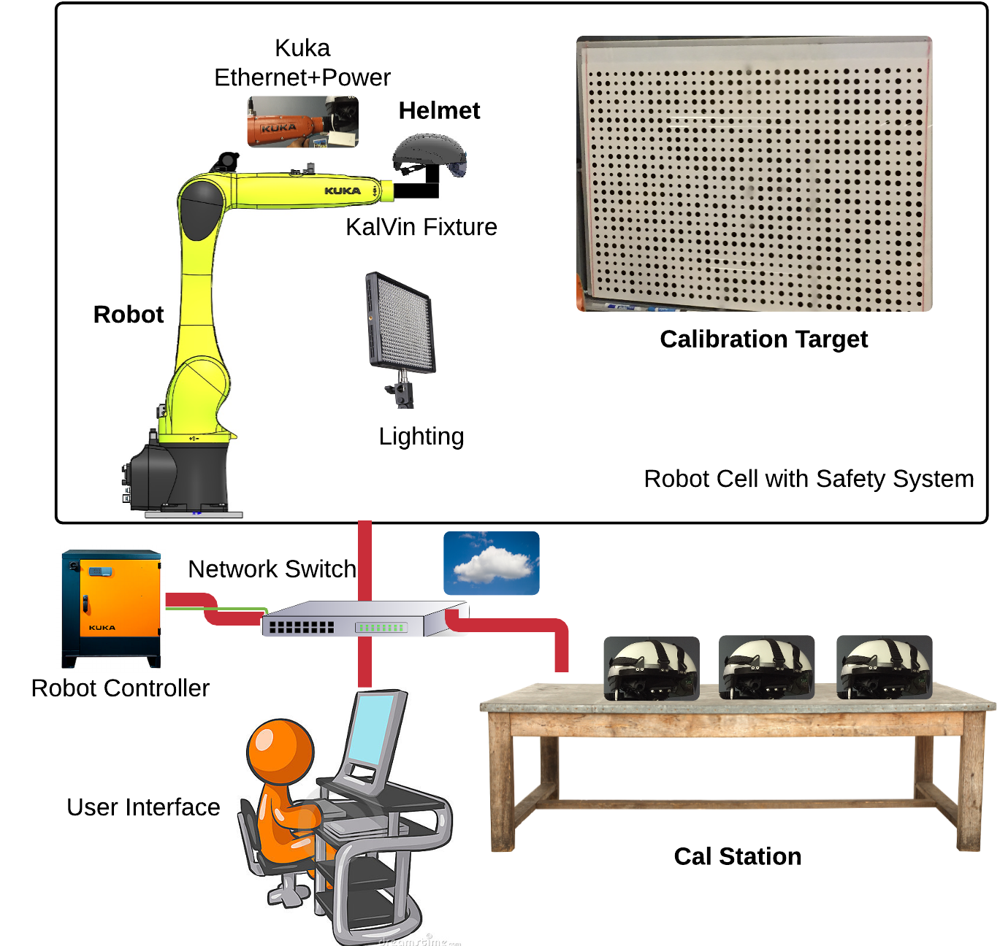
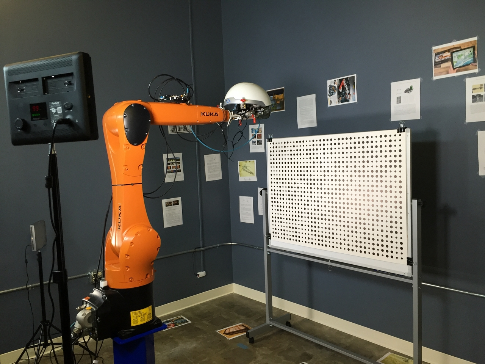
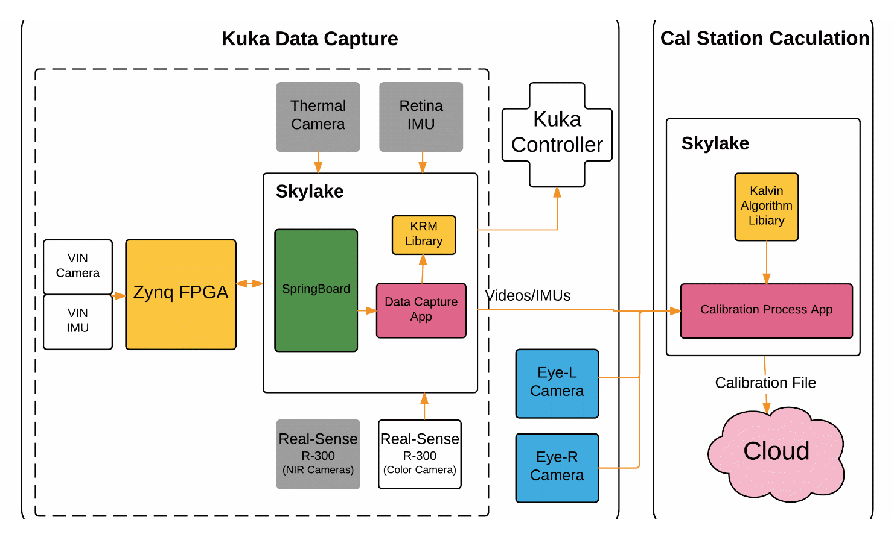

Kalvin Hardware Setup
This setup consists of two major parts supporting the calibration of the smart helmet or smart glasses: 1) inside a robot cell with safety system, we have a kuka robot, calibration targets, fixtures, and 2) robot controller and calibration station outside the cell.
 Kalvin Software Workflow
The calibration includes two major apps: 1) run DataCaptureApp to capture data while driving the AR headsets looking at calibration targets, 2) run CalibrationProcessAppp to calibrate the joint calibration of IMU, cameras, and AR display. It also upload results (and data if needed) to cloud for easy access.
Kalvin in Simulation
To speed up the development of the 'optimal' kuka trajectories for effective calibraton that is 1) safe, 2) fast, and 2) accurate, we actually built the simulation.
Demonstration Video of Early Kalvin
This is a video demonstrating automatic data capture of all the sensors and displays for joint calibration: the world camera, the analog IMU, and the two eye cameras (attached the fixture to calibrate left and right display).